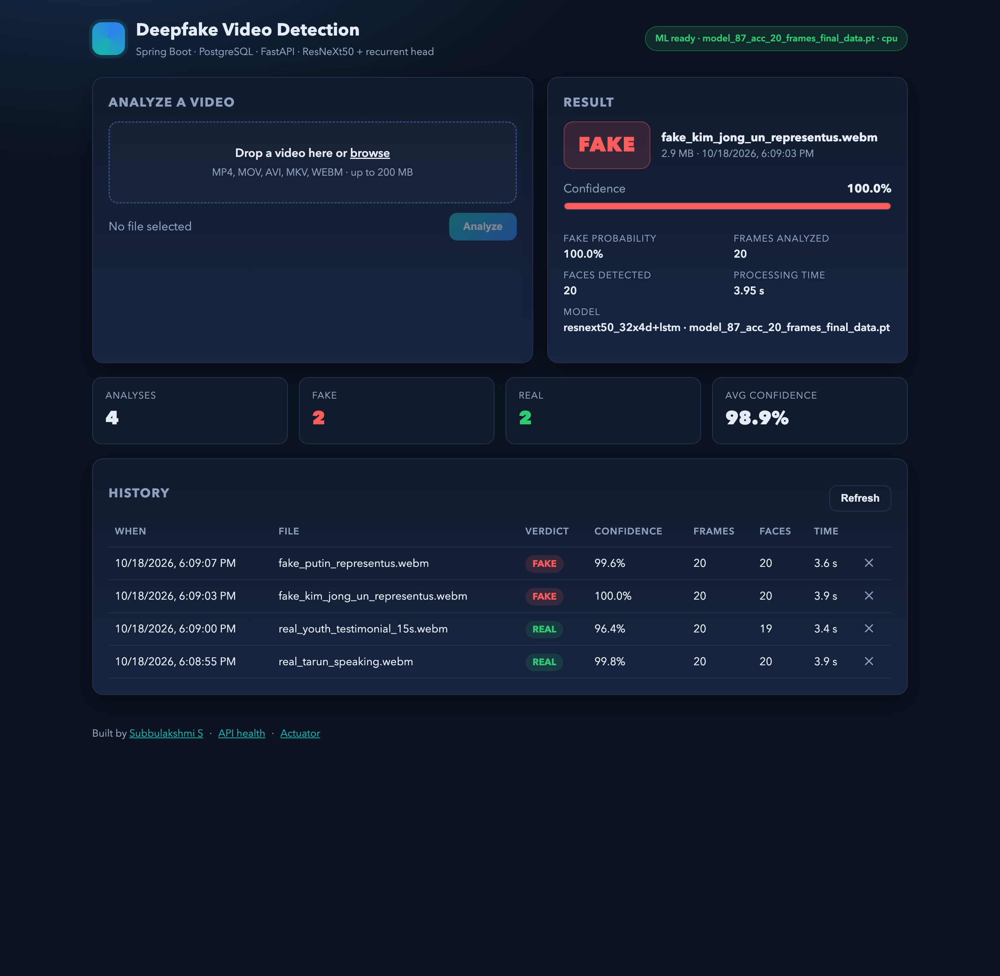
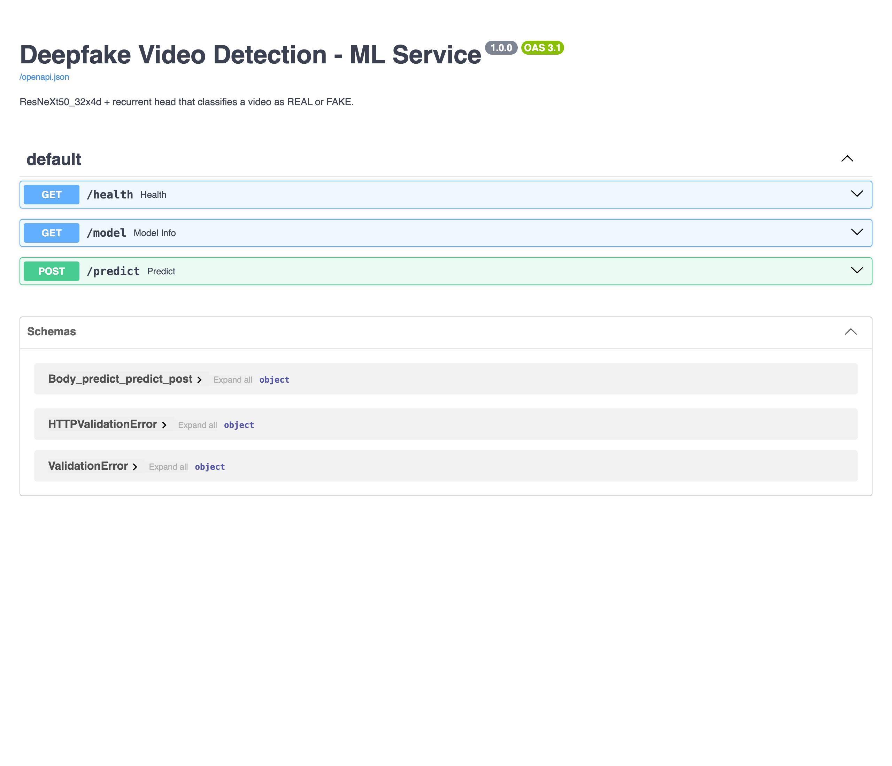
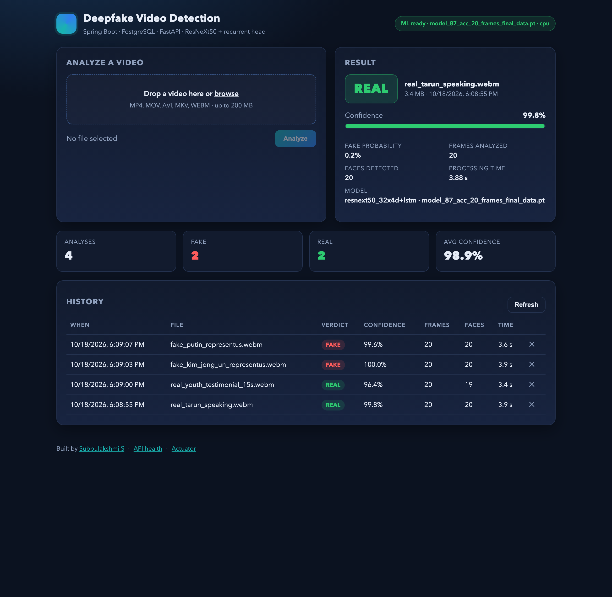

Overview
The platform has three parts. A Spring Boot backend accepts the upload, stores the file, calls the ML service and persists the result in PostgreSQL; it also serves the web UI. A FastAPI ML service decodes the video, crops the largest frontal face in each sampled frame and scores the sequence with a ResNeXt50_32x4d backbone and a recurrent head. The web UI uploads with a progress bar, shows the verdict card, and lists every analysis with stats.
MP4, MOV, AVI, MKV, WEBM
up to 200 MB
REAL / FAKE + confidence
frames and faces analysed, timing, model name
2 to 4 s per clip on CPU
20 frames at 112 × 112
PostgreSQL + local disk
one
video_analysis row per upload| Layer | Technology | Where |
|---|---|---|
| Frontend | HTML, CSS, vanilla JavaScript | backend/src/main/resources/static |
| Backend | Java 17, Spring Boot 3.3, Spring Web, Spring Data JPA, RestClient | backend/ |
| Database | PostgreSQL (9.5 to 16 tested) | backend/src/main/resources/schema.sql |
| ML service | Python 3.11, FastAPI, PyTorch, torchvision, OpenCV | ml-service/ |
| Model | ResNeXt50_32x4d features per frame → GRU or LSTM → softmax over {FAKE, REAL} | ml-service/app/model.py |

Architecture
/api/*./predict: frame sampling, Haar face crop, ResNeXt50 + recurrent head, softmaxvideo_analysis: verdict, confidence, frames, faces, timing, file metadataRequest flow
- The browser posts the video as
multipart/form-datatoPOST /api/analyses. DetectionServicevalidates the extension, stores the file under a UUID name and callsMlClient.predict.- The ML service picks
SEQUENCE_LENGTHframes, crops the largest frontal face per frame with 15 % padding (centre square when no face is found), resizes to 112 × 112 RGB, normalises with ImageNet statistics and runs the model. Softmax over the two classes givesfake_probabilityandreal_probability. - The backend persists a
video_analysisrow, or anERRORrow if the ML call failed, and returns it. - The UI renders the verdict card and refreshes the history table and stats tiles.
The ML call is deliberately outside any database transaction, so a slow video never pins a connection. If the ML service is down, the upload is still recorded with verdict ERROR and the client receives HTTP 502 with a JSON body.
Quick start
Prerequisites
- Java 17 (the Maven wrapper
./mvnwdownloads Maven itself). - Python 3.10 or newer.
- PostgreSQL on
localhost:5432, or Docker for the compose option.
Option A: one command
git clone <repository-url> deepfake-video-detection
cd deepfake-video-detection
# database, once
psql -h localhost -U postgres -c "CREATE ROLE deepfake LOGIN PASSWORD 'deepfake';"
psql -h localhost -U postgres -c "CREATE DATABASE deepfake_db OWNER deepfake;"
# python dependencies and a pretrained checkpoint
cd ml-service && python3 -m pip install -r requirements.txt -r requirements-dev.txt
python3 -m scripts.download_weights --frames 20
cd ..
./run-local.sh # starts ML service (:8000) and backend + UI (:8080), Ctrl+C stops bothOpen http://localhost:8080, drop a clip from docs/samples/ onto the upload box and press Analyze. The script detects a PostgreSQL server older than 12 and switches the backend to the legacypg profile automatically.
Option B: start the services yourself
# terminal 1: ML service
cd ml-service
uvicorn app.main:app --host 0.0.0.0 --port 8000
# terminal 2: backend + UI
cd backend
./mvnw spring-boot:run # PostgreSQL 12 or newer
SPRING_PROFILES_ACTIVE=legacypg ./mvnw spring-boot:run # PostgreSQL older than 12Option C: Docker Compose
docker compose up --build
# UI http://localhost:8080
# ML docs http://localhost:8000/docsCompose starts PostgreSQL 16, builds both images and mounts ml-service/weights/ read-only into the ML container, so download a checkpoint first.
Configuration
Everything is an environment variable with a sensible default. Nothing needs editing to run locally.
Backend
| Variable | Default | Purpose |
|---|---|---|
PORT | 8080 | HTTP port for the API and UI |
DB_URL | jdbc:postgresql://localhost:5432/deepfake_db | JDBC URL |
DB_USER / DB_PASSWORD | deepfake / deepfake | Database credentials |
ML_BASE_URL | http://localhost:8000 | Where the ML service listens |
ML_READ_TIMEOUT_MS | 180000 | How long to wait for one prediction |
APP_STORAGE_DIR | ./uploads | Where uploaded videos are kept. Use an absolute path in production. |
SPRING_PROFILES_ACTIVE | unset | Set to legacypg for PostgreSQL older than 12 |
Uploads are capped at 200 MB (spring.servlet.multipart.max-file-size). The schema is created on start-up from schema.sql, which is idempotent and uses BIGSERIAL so it also works on old servers. CORS is open on /api/** for development.
ML service
| Variable | Default | Purpose |
|---|---|---|
MODEL_PATH | first *.pt in WEIGHTS_DIR | Checkpoint to load |
WEIGHTS_DIR | ./weights | Folder scanned for checkpoints |
SEQUENCE_LENGTH | read from the file name (_20_frames), else 20 | Frames fed to the model per video |
IMAGE_SIZE | 112 | Square crop size in pixels |
DEVICE | auto (CUDA if present, else CPU) | Torch device; cpu, cuda, mps |
FACE_PADDING | 0.15 | Margin added around the detected face, as a fraction of its size |
ARCH_PROFILE | auto | gru (this project's model) or jadhav-lstm (public checkpoints); auto reads the checkpoint |
MAX_UPLOAD_MB | 200 | Reject larger files with HTTP 413 |
REST API
Backend, port 8080
| Method | Path | Description | Status |
|---|---|---|---|
POST | /api/analyses | Multipart field file. Analyses the video and stores the result. | 201, 400, 413, 502 |
GET | /api/analyses?page=0&size=20 | History, newest first. size is clamped to 1–100. | 200 |
GET | /api/analyses/{id} | One analysis | 200, 404 |
DELETE | /api/analyses/{id} | Deletes the row and the stored file | 204, 404 |
GET | /api/analyses/stats | Counts by verdict and average confidence (errors excluded) | 200 |
GET | /api/health | Backend status plus the ML service's health map | 200 |
GET | /actuator/health, /actuator/info | Spring Boot Actuator | 200 |
Analyse a video
curl -F file=@docs/samples/fake_kim_jong_un_representus.webm http://localhost:8080/api/analyses{
"id": 3,
"fileName": "fake_kim_jong_un_representus.webm",
"sizeBytes": 3026323,
"verdict": "FAKE",
"confidence": 0.9999,
"fakeProbability": 0.9999,
"framesAnalyzed": 20,
"facesDetected": 20,
"processingMs": 3948,
"modelName": "resnext50_32x4d+lstm · model_87_acc_20_frames_final_data.pt",
"errorMessage": null,
"createdAt": "2026-10-18T12:39:03.747Z"
}History and stats
GET /api/analyses?page=0&size=3
{ "items": [ { "id": 4, "verdict": "FAKE", ... }, ... ], "page": 0, "size": 3, "total": 4 }
GET /api/analyses/stats
{ "total": 4, "fake": 2, "real": 2, "errors": 0, "avgConfidence": 0.9894 }Errors
Every error is JSON with the same shape. Validation failures are 400, an unknown id is 404, an oversized upload is 413, and an ML failure is 502 (the upload is still recorded with verdict ERROR).
{
"timestamp": "2026-10-18T12:39:14.711Z",
"status": 400,
"error": "Bad Request",
"message": "Unsupported file type '.md'; allowed: avi, mkv, mov, mp4, webm"
}ML service, port 8000
| Method | Path | Description |
|---|---|---|
GET | /health | status, model_loaded, trained, device, weights, sequence_length, image_size |
GET | /model | Backbone, recurrent type, profile, weights file, class index mapping |
POST | /predict | Multipart field file. Returns label, confidence, fake_probability, real_probability, frames_analyzed, frames_total, faces_detected, fps, duration_s, processing_ms, model |
GET | /docs | Interactive Swagger UI generated by FastAPI |

/docs.ML model
Each sampled frame goes through torchvision.models.resnext50_32x4d (ImageNet weights, final pooling and classifier removed) and becomes a 2048-dimensional feature vector. A recurrent layer with hidden size 2048 reads the sequence, followed by dropout 0.4 and a linear layer with two outputs. Class index 0 is FAKE, index 1 is REAL; the reported confidence is the softmax probability of the chosen class.
Architecture profiles
| Profile | Recurrent layer | Pooling | Frame sampling | Use |
|---|---|---|---|---|
gru | GRU, batch-first, with bias | Mean of GRU outputs over time | Spread evenly over the clip | This project's own model; train it with scripts/train.py |
jadhav-lstm | LSTM created as nn.LSTM(2048, 2048, 1, False), so bias=False and batch_first=False | Per-frame logits averaged | Consecutive frames from the first detected face | Loads the public ResNeXt50 + LSTM checkpoints unchanged |
The public checkpoints were trained with an LSTM whose fourth positional argument was meant to be bidirectional but is actually bias, and without batch_first, so every frame is effectively scored on its own. The jadhav-lstm profile reproduces that exactly, which keeps the weights valid, and then averages the per-frame logits instead of trusting the last frame only.
Preprocessing
- Decode with OpenCV. For
headsampling, scan the first three seconds for the first frame with a face and takeSEQUENCE_LENGTHconsecutive frames from there; foruniformsampling, spread the frames over the whole clip. - Detect faces with the Haar frontal-face cascade on a copy downscaled to 640 px wide, keep the largest, add 15 % padding. Without a face, use the centre square.
- Resize to 112 × 112, convert to RGB, scale to 0–1 and normalise with ImageNet mean and standard deviation.
- Repeat the last frame when the clip is shorter than the sequence length.
Weights
The service loads the first *.pt in ml-service/weights/. Without one it still starts, uses an ImageNet backbone with an untrained head, and reports trained: false; the UI then shows an amber "untrained demo weights" pill.
# pretrained checkpoint (226 MB), 20 frames, trained on FaceForensics++ / Celeb-DF / DFDC
python3 -m scripts.download_weights --frames 20
python3 -m scripts.download_weights --list # see every checkpoint in the public folder
# train your own GRU model: DATA/{train,val}/{real,fake}/*.mp4
python3 -m scripts.train --data DATA --epochs 10 --seq-len 20 --out weights/deepfake_gru_20_frames.ptCheckpoints are loaded with torch.load(..., weights_only=True), so a downloaded file cannot execute code. Training writes the profile, sequence length and image size into the checkpoint so the service configures itself from it.
Limitations
- The public checkpoint learned face-swap deepfakes with a visible frontal face. Fully generated video, cartoons, or clips without a face are outside its training distribution and verdicts on them are not meaningful.
- Its published accuracy (87 %) is on its own benchmark split. The sample clips here are a smoke test, not an evaluation.
- The Haar cascade misses strongly turned faces; the centre-square fallback keeps the pipeline running but lowers confidence.
Sample clips & results
All clips live in docs/samples/. Only the synthetic ones were made by this project; the rest come from Wikimedia Commons under licences that allow redistribution.
| File | What it is | Licence | Verdict | Confidence | Faces / 20 |
|---|---|---|---|---|---|
real_tarun_speaking.webm | Person speaking to camera, genuine footage | CC0 1.0 | REAL | 99.8 % | 20 |
real_youth_testimonial_15s.webm | "Doing It – Youth Testimonial", genuine footage | Public domain (US federal work) | REAL | 96.4 % | 19 |
fake_kim_jong_un_representus.webm | Face-swap deepfake PSA by RepresentUs (2020) | CC BY 3.0 © RepresentUs | FAKE | 99.99 % | 20 |
fake_putin_representus.webm | Face-swap deepfake PSA by RepresentUs (2020) | CC BY 3.0 © RepresentUs | FAKE | 99.8 % | 20 |
sample_clip_1.mp4, sample_clip_2.mp4 | Synthetic cartoon-face clips for pipeline tests | MIT (this repository) | not meaningful (no real face) | ||

Testing
cd backend && ./mvnw test # 18 tests: MockMvc controller tests on H2 with the ML client mocked,
# plus RestClient wire-format tests against MockRestServiceServer
cd ml-service && python3 -m pytest # 5 tests: health, model info, prediction on a synthetic clip,
# unsupported extension (400), undecodable video (400)The backend tests run on an in-memory H2 database in PostgreSQL mode, so they need neither PostgreSQL nor the ML service. The ML tests generate their own one-second clip and run the real model on CPU; set SEQUENCE_LENGTH=6 (the tests do this) to keep them under five seconds.
Deployment
Containers
backend/Dockerfile is a two-stage build (Maven with Temurin 17, then a slim JRE) that produces an image running java -jar app.jar with uploads under /app/uploads. ml-service/Dockerfile installs CPU wheels of PyTorch from the official index and serves with Uvicorn on port 8000. docker-compose.yml wires both to PostgreSQL 16 with health checks and named volumes for the database and uploads.
Before exposing it publicly
- Put the backend behind HTTPS and add authentication; the API currently has none and CORS is open on
/api/**. - Set
APP_STORAGE_DIRto a persistent absolute path, or swapStorageServicefor object storage. - Give the ML service a GPU (
DEVICE=cuda) or more CPU; one prediction takes 2 to 4 s of CPU time and requests are processed one at a time per worker. - Lower
MAX_UPLOAD_MBand the backend's multipart limits to what you actually need. - Change the database password and keep it out of
docker-compose.yml(use an env file or secrets).
Troubleshooting
| Symptom | Cause | Fix |
|---|---|---|
module 'cv2' has no attribute 'CascadeClassifier' | OpenCV 5 removed the Haar cascade API | pip install "opencv-python-headless>=4.9,<5" (pinned in requirements.txt) |
GET /api/analyses returns 500 with syntax error at or near "$1" | PostgreSQL older than 12 rejects Hibernate's FETCH FIRST ? paging | Start the backend with SPRING_PROFILES_ACTIVE=legacypg |
| Header pill says "untrained demo weights" | No checkpoint in ml-service/weights/ | python3 -m scripts.download_weights --frames 20, then restart the ML service |
Uploads return 502 and the history shows ERROR rows | ML service down or ML_BASE_URL wrong | Check curl localhost:8000/health; fix the URL or start the service |
Port 8080 was already in use | Another process owns the port | Set PORT=8081 (backend) or --port 8001 plus ML_BASE_URL (ML) |
Hibernate logs HHH000511 ... version ... no longer supported | Old PostgreSQL server | Harmless with the legacypg profile; upgrade PostgreSQL when you can |
| Cartoon or fully generated videos get confident verdicts | Out of the model's training distribution | Expected; see Limitations |
| Predictions are slow | CPU inference, 20 frames through ResNeXt50 | Use DEVICE=cuda on a GPU host; do not lower SEQUENCE_LENGTH below what the checkpoint was trained with |
Project structure
deepfake-video-detection/
├── backend/ Spring Boot app
│ ├── pom.xml, mvnw, mvnw.cmd, .mvn/
│ ├── Dockerfile
│ └── src/main/java/com/subbulakshmi/deepfake/
│ ├── config/ MlProperties, StorageProperties, WebConfig, LegacyPostgresDialect
│ ├── domain/ VideoAnalysis, Verdict, VideoAnalysisRepository
│ ├── ml/ MlClient, MlPrediction, MlModelInfo, MlServiceException
│ ├── service/ DetectionService
│ ├── storage/ StorageService
│ └── web/ AnalysisController, GlobalExceptionHandler, dto/
│ └── src/main/resources/ application.yml, application-legacypg.yml, schema.sql, static/
│ └── src/test/java/ AnalysisControllerTest, MlClientTest
├── ml-service/ FastAPI + PyTorch
│ ├── app/ config.py, model.py, video.py, main.py
│ ├── scripts/ download_weights.py, train.py, make_sample_video.py
│ ├── tests/ test_api.py
│ ├── weights/ *.pt (git-ignored)
│ ├── requirements.txt, requirements-dev.txt, Dockerfile
├── docs/ architecture.md, DEMO.md, samples/, screenshots/, index.html (this page)
├── docker-compose.yml
├── run-local.sh
└── README.md, LICENSECredits & licences
- Application code: MIT licence, © 2026 Subbulakshmi S.
- Pretrained checkpoints: from the GPL-3.0 project Deepfake_detection_using_deep_learning by Abhijit Jadhav; downloaded on demand, never committed.
- Backbone weights: torchvision's ImageNet-pretrained ResNeXt50_32x4d.
- Sample clips: Wikimedia Commons, licences listed in Sample clips & results and in
docs/samples/SAMPLES.md. - Face detection: OpenCV's Haar frontal-face cascade.